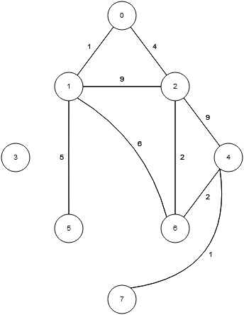

Shortest paths questions

Weighted undirected graph. Source: cs.usfca.edu/~galles
a) Show what the distance array looks like after you initialize it.
{∞, ∞, 0, ∞, ∞, ∞, ∞, ∞}
(the starting vertex is initialized to 0, all others are initialized to ∞)
b) Show what the distance array looks like after updating vertex 2's neighbors' distances.
{4, 9, 0, ∞, 9, ∞, 2, ∞}
(the distances of vertices 0, 1, 4, and 6 are updated)
c) Show what the distance array looks like after picking the next minimum-distance vertex and updating its neighbors' distances.
{4, 8, 0, ∞, 4, ∞, 2, ∞}
(vertex 6 is picked because it's the minimum-distance unknown vertex,
and the distances of vertices 1 and 4 are updated;
in both cases, the new distance is smaller than the old distance;
vertex 2 is not checked because it's already a "known" vertex)
You are given a flight graph, where vertices are cities and edges are flights. Edge weights are the prices of the flights. Some prices are negative because certain airlines will pay you to fly (but there are no negative cycles). Suppose you want to find the cheapest path between all pairs of cities. Which algorithm would you use?
The Floyd-Warshall algorithm. Dijkstra's algorithm would not work because of the negative-weight edges. If there were no negative-weight edges, you could run Dijkstra's algorithm V times, once for each starting vertex.
Suppose you implement Dijkstra's shortest path without a priority queue. This would allow you to perform each "find minimum-distance vertex" operation in O(V) time (by doing a linear search), and each "update distance" operation in O(1) time. What is the worst-case runtime of this implementation as a function of V (number of vertices) and E (number of edges)?
We perform V "find minimum-distance vertex" operations, and at most E "change distance" operations, so this implementation's worst-case runtime is O(V2 + E), which is O(V2) because E is at most V2.
Questions to talk about in class
Suppose you want to solve the single-destination shortest path problem on a directed graph (finding the shortest path from each vertex to some vertex t). Explain how you can use Dijktra's algorithm to solve it (by modifying the algorithm and/or the graph).Flip the direction of each edge and run Dijkstra's algorithm starting at vertex t.